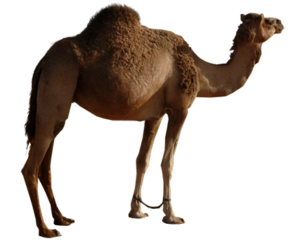
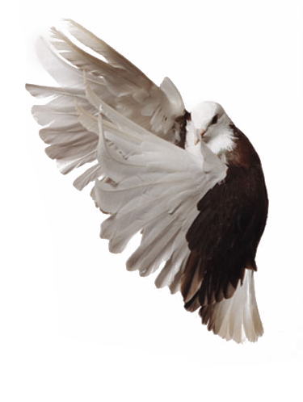

Click on the camel to see how to make origami camel
FACTS ABOUT CAMEL
1. There are two types of camels: One humped or “dromedary” camels and two humped Bactrian camels.
2. Camels have three sets of eyelids and two rows of eyelashes to keep sand out of their eyes.
3. Camels have thick lips which let them forage for thorny plants other animals can’t eat.
4. Camels can completely shut their nostrils during sandstorms.
5. Thanks to thick pads of skin on their chest and knees, camels can comfortably sit in very hot sand.
Click on the chameleon to see how to make origami chameleon

FACTS ABOUT CHAMELON
1. Chameleons have eyes in the backs of their heads.
2. Chameleons come in a lot of different shapes and sizes.
3. Chameleons have extremely powerful tongues.
4. Most chameleons eat on things you wouldn’t want to find on your dinner plate.
5. Chameleons have good eyesight for a lizard.
Click on the pigeon to see how to make origami pigeon
FACTS ABOUT PIGEON
1. Pigeons are incredibly complex and intelligent animals.
2. Pigeons are highly sociable animals.
3. They will often be seen in flocks of 20-30 birds.
4. Pigeons are actually very clean animals.
5. Pigeons have excellent hearing abilities.